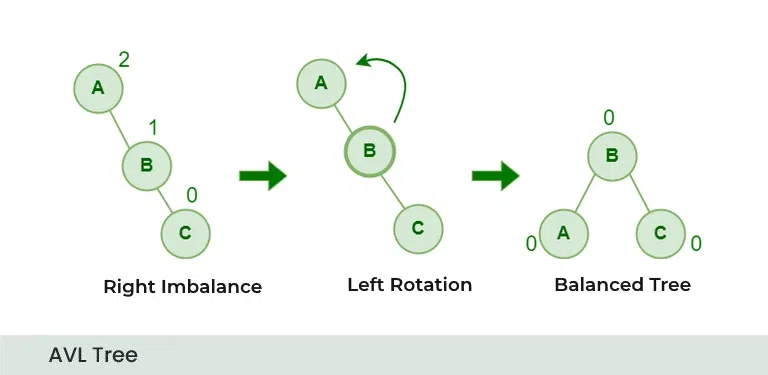
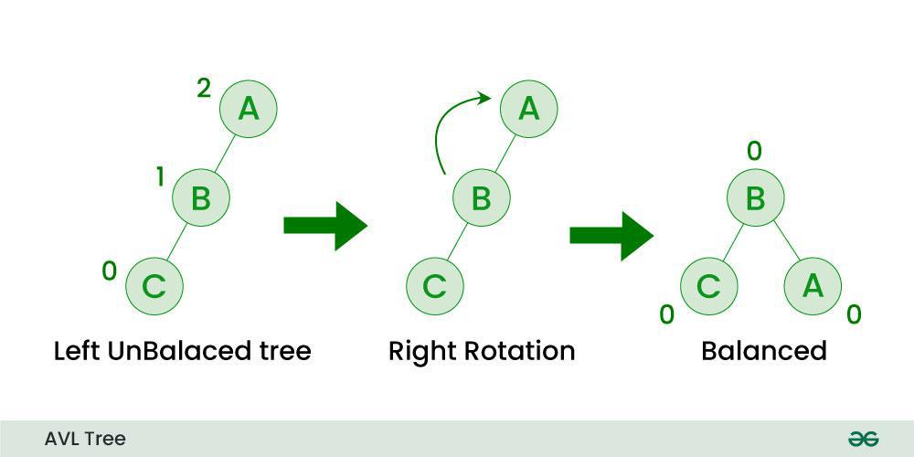
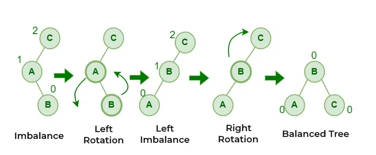
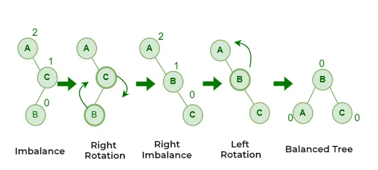

AVL stands for Adelson-Velsky and Landis, the two Russian scientists who introduced this self-balancing binary search tree in 1962.
An AVL Tree is a self-balancing Binary Search Tree where the difference between heights of left and right subtrees (Balance Factor) of every node is at most -1, 0, or +1.
Balance Factor = Height(Left Subtree) − Height(Right Subtree)
When it occurs:
When insertion happens in the left subtree of the left child.
Problem Structure:
30
/
20
/
10
To fix this imbalance, a Right Rotation is performed. The left child becomes the new root.

When it occurs:
When insertion happens in the right subtree of the right child.
Problem Structure:
10
\
20
\
30
To fix this imbalance, a Left Rotation is performed. The right child becomes the new root.

When it occurs:
When insertion happens in the right subtree of the left child.
Problem Structure:
30
/
10
\
20
This is a double rotation:
1. Left Rotation on left child
2. Right Rotation on root

When it occurs:
When insertion happens in the left subtree of the right child.
Problem Structure:
10 \ 30 / 20
This is also a double rotation:
1. Right Rotation on right child
2. Left Rotation on root

In biotechnology, millions of biological records are stored. AVL ensures fast retrieval in logarithmic time.